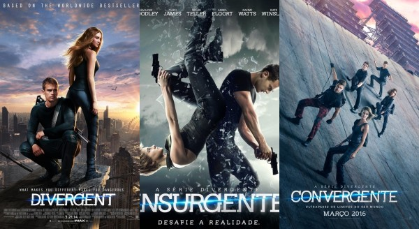
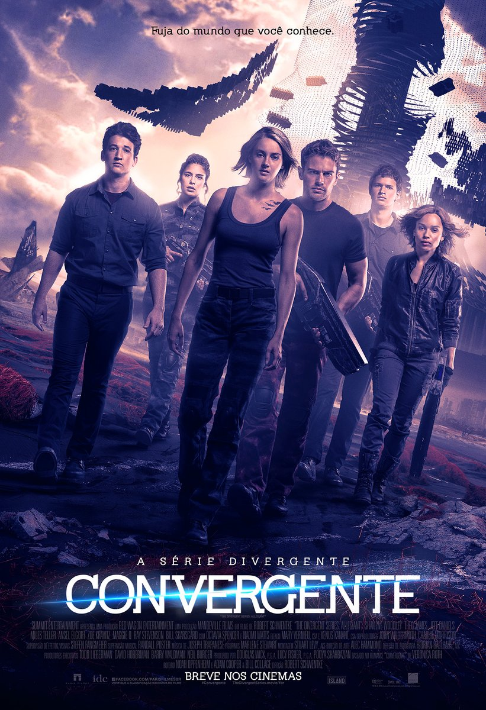

A Trilogia Divergente é uma série de livros para jovens, envolvendo romance, ficção científica e aventura escrita por Veronica Roth. A história é situada numa Chicago pós-apocalíptica distópica. A trilogia é composta por Divergente (2011), Insurgente (2012) e Convergente (2013).
Divergente se passa em uma Chicago futurística destruída após uma guerra. Para manter a paz os fundadores construiram uma cerca e dividiram a população em cinco grupos denominados facções, cada uma representa uma qualidade humana são elas: honestidade (Franqueza), generosidade (Amizade), coragem (Audácia), inteligência (Erudição) e altruísmo (Abnegação). No dia de seu teste de aptidão, Beatrice Prior descobre que é uma divergente, ou seja, apresenta uma personalidade para mais de uma facção. Na cerimônia de escolha, Beatrice surpreende ao escolher uma facção completamente diferente da sua antiga. Lá ela conhece Quatro (Theo James), um rapaz mais experiente na facção que ela, que passa a ser seu instrutor de treinamento e que consegue intrigá-la e encantá-la ao mesmo tempo.
